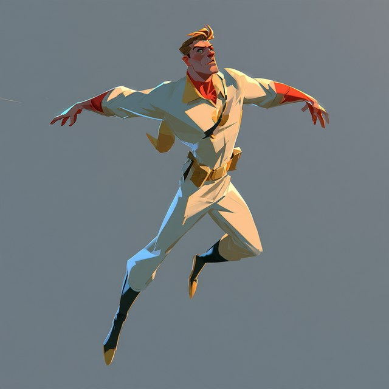
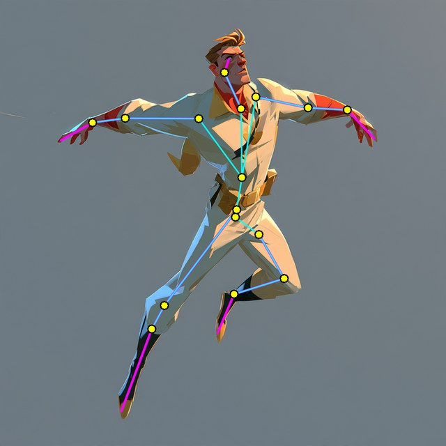
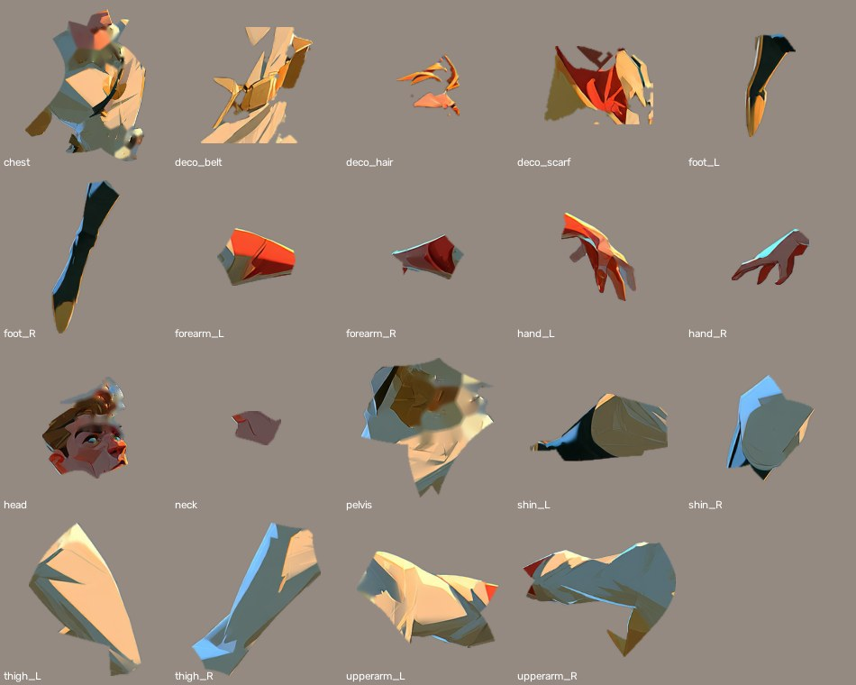
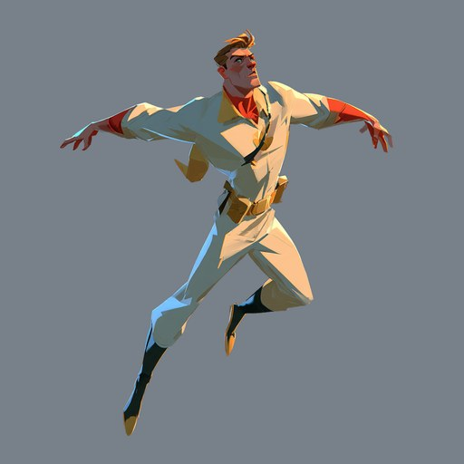
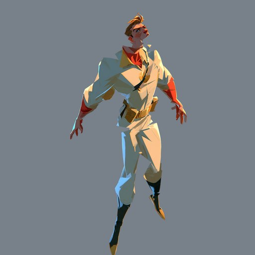
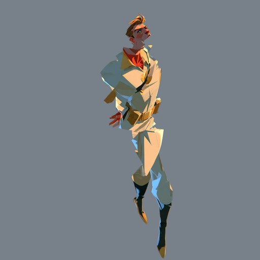
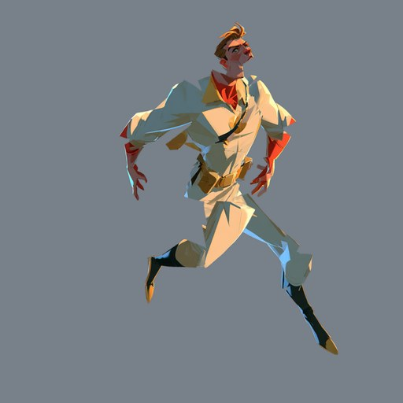

AW-STUDY-0047
Rigged Hero Cut-Out
Evan pasted a flying hero and asked for a fully rigged skeleton with decorations, so stock 2D bipedal animations can drive it. We cut the picture into 16 body parts and 3 decorations, hung them on 16 named bones, and exported a Unity-style package. The rig turns correctly in our test renders. I could not run Unity here, so the Unity builder script is untested.


The parts

The rig turning




What is in the package
rig.json: bones (parent, pivot, tip), parts (sprite file, bone, draw order), decorations flagged. Bone names follow the Character Studio set, with the character's own sides:hips, spine, neck, head, upperarm/forearm/hand_L/R, thigh/shin/foot_L/R.sprites/: 19 transparent PNGs.poses.json: the four poses as local rotations per bone, ready to key.unity/AwRigBuilder.cs: an editor menu that builds a prefab (bone GameObjects with SpriteRenderers sorted by draw order) from the rig. Any stock clip that rotates those bone paths then plays on it.
How to use it in Unity
- Copy the study folder (rig.json, sprites, unity) under Assets, keep AwRigBuilder.cs in an Editor folder.
- Menu Abbie's World, Build 2D Rig From rig.json, and pick rig.json.
- Drag the prefab into a scene; make clips that rotate the bone transforms, or retarget a stock set to the same bone names.
Honest limits
- Unity untested. The script is written to the Unity 2021 API but never compiled or run.
- Rigid parts, not a mesh skin. Parts rotate like paper cut-outs; elbows and knees show a seam when bent far. Unity's 2D Animation package (sprite mesh skinning) would blend them, and needs a layered PSB.
- Hidden areas are missing. Where one limb covered another, nothing was ever drawn behind it, so big turns show gaps. The hair and belt cut-outs left smeary fill on the head and chest.
- The hero is front-facing. Most stock 2D clips are side views, so a walk or run on this picture reads oddly. A side or neutral three-quarter view would take stock clips better.
- Our web engine uses its own 2D rig format; the same bones and parts load there too if we want to skip Unity.
Even better if
- Midjourney drew the hero as a rest-pose turnaround (front, side, back) with arms down and no overlaps, so every part is fully visible.
- Each part were painted complete (the hidden half of every limb) before rigging.
- Limbs became soft meshes with weights at the joints instead of rigid pieces.
- A real Unity test, with one stock walk cycle retargeted, before we call this finished.
Code: tools/rig-cutout/ (cutout.py, pose.py, example/). Picture: pasted by Evan. Tour: no.